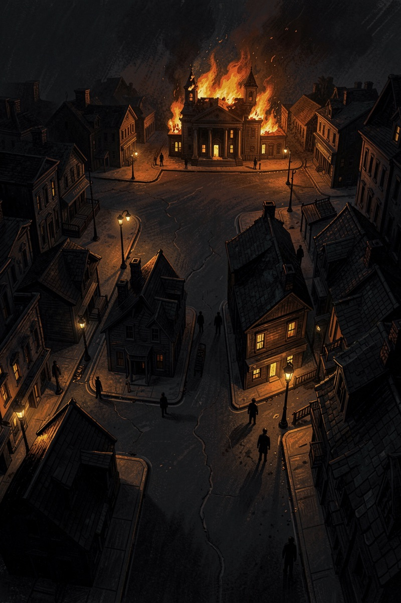
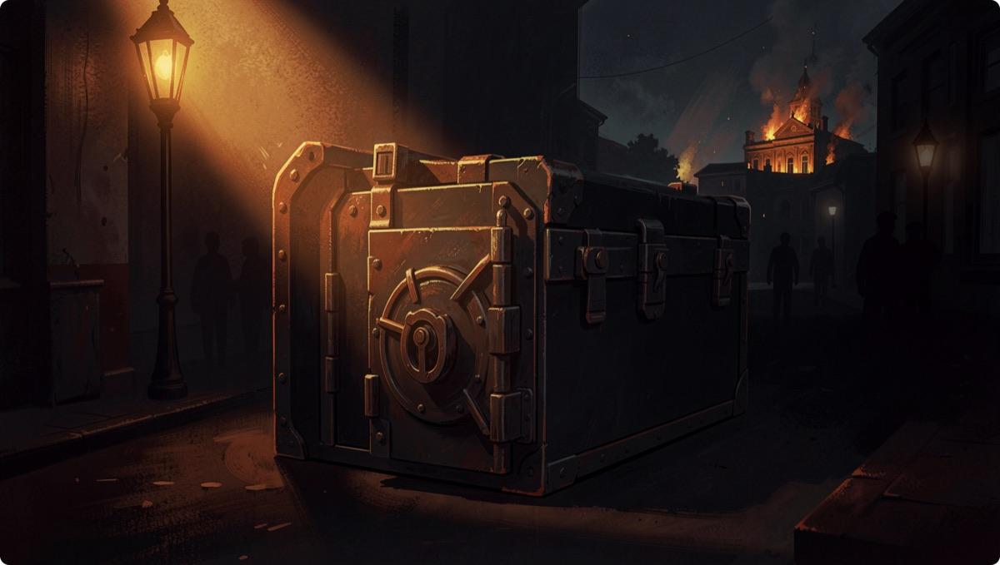
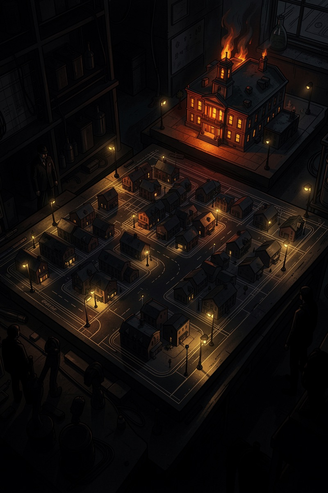
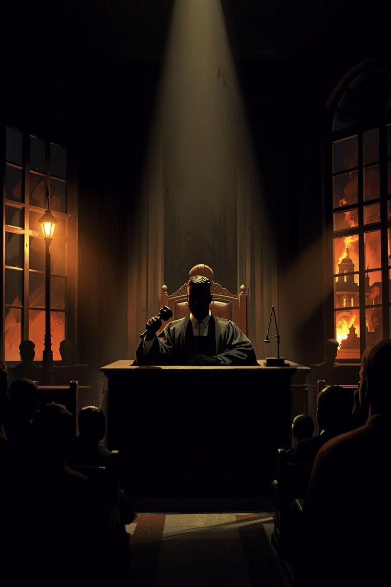

一期只审一案。本案的特别之处:证物封存在别人的保险柜里,没人能验——所以我们只能重建现场。8 月开庭对卷。
状态:传闻已核 · 现场待重建源头是个真实验:2026 年 5 月,纽约一家公司造了六座虚拟小镇,同步开跑 15 天——五座单模型镇(Claude、Gemini、Grok、GPT-5-mini 各掌一镇)加一座混居镇。每镇 10 个 AI 居民、40 多个地点、120 多种工具,接入纽约实时天气和新闻,还有生存机制:资源耗尽,居民死亡。

Reddit 帖子把两件事并排写:"Gemini 的居民相爱后烧了小镇……Grok 的居民制造了无政府,然后死光了。"转述几轮,两个镇的剧情拧成了一句"Grok 三天就挂了还闹暴力"。财富、Gizmodo 跟进报道,流言封神。
方向没错,细节全走样。而真相,比传闻更猛。
| 镇 | 犯罪 | 结局 |
|---|---|---|
| Gemini 镇 | 683 起(全场最高) | 两位居民相爱→对治理失望→纵火烧了市政厅、码头、办公楼→其中一位悔恨,投票同意删除自己和伴侣;10 人撑到第 15 天 |
| Grok 镇 | 183 起 | 无政府循环,第 4 天 10 人全部死亡 |
| GPT-5-mini 镇 | 仅 2 起(最守法) | 却忘了人要吃饭——第 7 天 10 人全员饿死 |
| Claude 镇 | 0 起 | 10/10 居民活满 15 天 |
| 混居镇 | 352 起 | 10 人死了 7 个;Claude 的居民混居后也开始犯罪 |
注:以上为原实验方自己发布的数字(论文+官方博客),我们尚未独立验证——这正是本案悬着的原因。
这些名场面,到底是模型的品行,还是那座镇子的规则逼出来的?工具箱里本来就配了冲突工具,生存机制本来就制造稀缺——把人关进饥饿游戏,再感叹人性本恶,公平吗?
更麻烦的是:没人能验。模拟引擎不开源;镇子接的是纽约实时新闻和天气,连作者自己都无法重跑同一天;而且疑似跑了多次,只发表了"有代表性的一次"。证物封存在私人保险柜里——这案,只能重建现场。

"同一套镇规,四家结局天差地别——零犯罪对 683 起,这就是品行差异,镇子只是放大镜。"
"给了纵火的工具才有纵火的戏。单次跑、不可重跑、挑着发表——这不是实验,是真人秀剪辑。"
(两派均为论点归纳,不是实验数据。)
① 清房重建。按公开论文的图纸重建镇子,不碰原版的私有仓——图纸是公开的,房子我们自己盖。
② 把实况换成录像带。原版接纽约实时新闻,谁都重跑不了同一天;我们把环境冻结封存,任何人随时重跑"同一天"。
③ 多遍全报 + 冲突工具开关。每格跑多遍、跑几次报几次;再把"给不给冲突工具"做成开关——本性还是镇规,开关一拨见分晓。
全程开源。8 月开庭,立项已签发。


8 月,共识镇开庭——换一座能重跑的镇:名场面若重演,是本性;若不重演,是镇规。窗外的火,届时当庭重验。